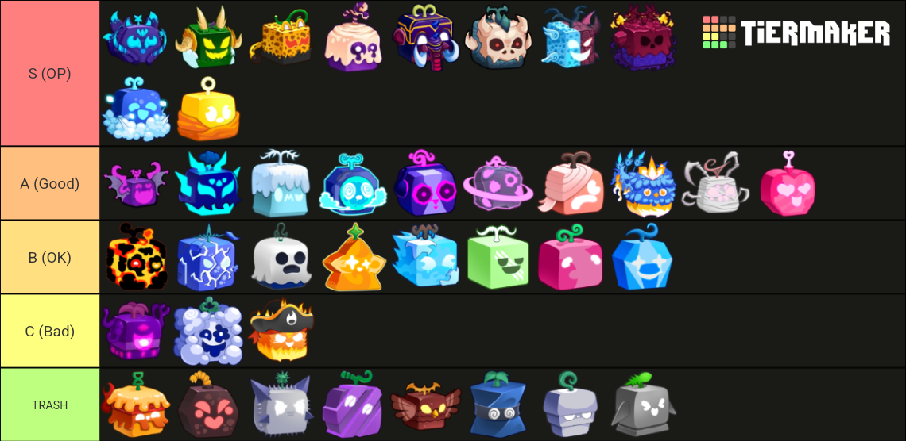
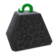
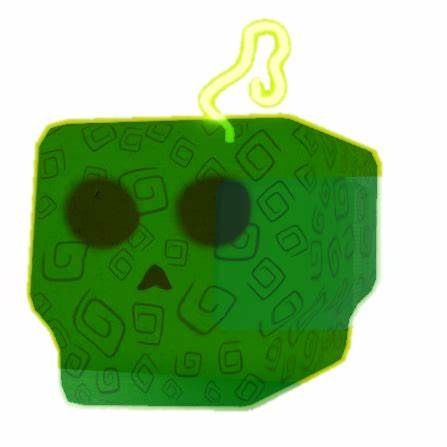
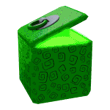
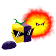

Blox Fruits are named after what they do and are mysterious fruits that can be found across various locations in the game. When eaten, they grant the consumer a supernatural ability, with each fruit having its own distinct power. In exchange for power, the user cannot swim and will die if they stay in Water for too long. Some Blox Fruits have special abilities that can grant the user certain immunities, or create detrimental weaknesses.
They are the main, core mechanism of the game, as well as being represented as the game title, hence Blox Fruits.

Blox Fruits that are unobtainable from normal means/or removed, usually replaced by another fruit but not always.



